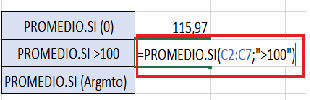

¿Son útiles?
La funcion condicional en Excel. ... Este método ofrece a los usuarios la posibilidad de visualizar grandes o complejas cantidades de datos. La gran ventaja es que toda esa información la recoge en uno a mas cuadro sacando una conclusión de los datos, por ejemplo el promedio de los datos, la suma, la resta, etc.
